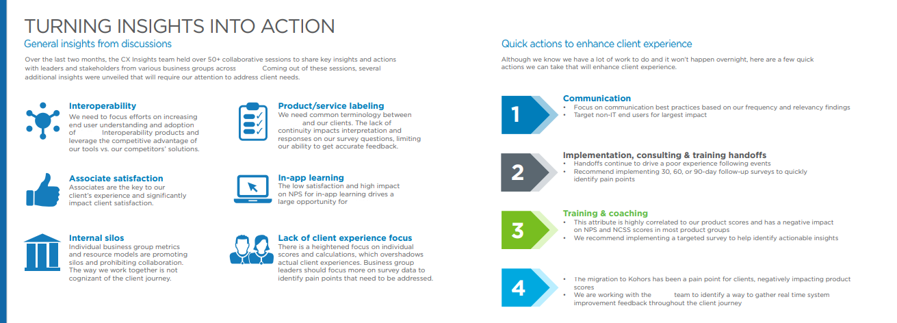
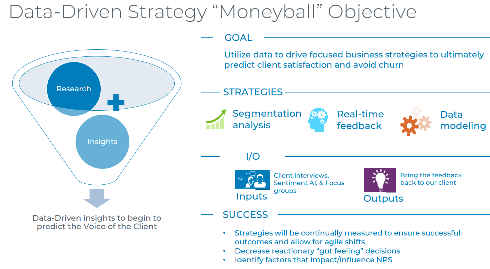
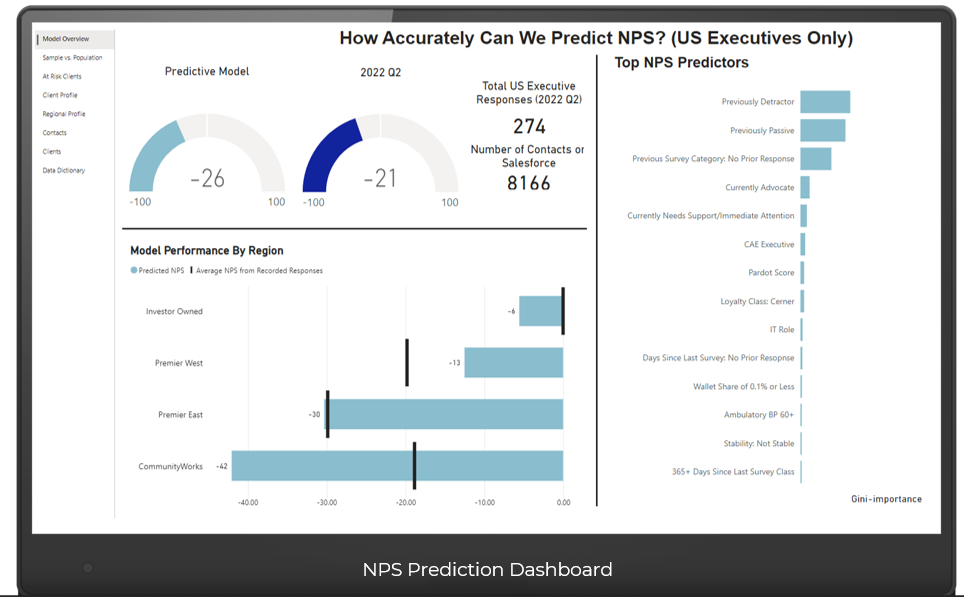
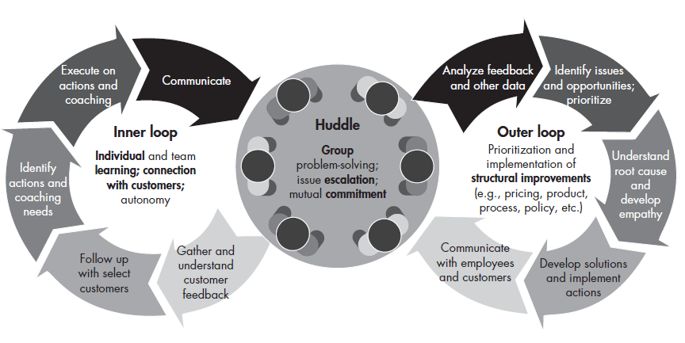

Customer Experience | Voice of Customer | Brand Strategy | Change Management
I build customer focused programs that transform brand & customer experiences.
I am a strategic, highly collaborative leader with 20+ years of experience turning quantitative and qualitative feedback into business recommendations that improve customer experience, retention, operational efficiency, and executive decision-making.
Executive Profile
Customer-centric strategy with the operating discipline to make it scale.
My work sits at the intersection of customer experience, brand research, analytics operations, and change management. I create the roadmap, build the listening posts, translate the data, and partner with product, marketing, customer care, and executive teams so feedback becomes measurable improvement.
I am known for executive-ready narratives, disciplined governance, scalable frameworks, and teams that can connect customer sentiment to business action.
Strengths
Where I create leverage
Enterprise VOC strategy
Listening posts, survey design, journey feedback, NPS, closed-loop improvement, and customer retention insights.
Brand research and market intelligence
Brand tracking, competitor research, customer perception analysis, and business narratives for leadership teams.
Analytics and KPI frameworks
Power BI, Qualtrics, reporting architecture, scorecards, performance measurement, and AI-enabled theme analysis.
Change management
Continuous improvement frameworks, templates, operational documentation, adoption planning, and scalable governance.
Selected Work
Programs that connect customer voice, operations, and action.
Experience Hub Framework
Designing the contact center as the interaction hub of the digital enterprise.
The Experience Hub blueprint organizes client experience, associate experience, technology scalability, quality, and predictability into one operating model. The work starts with visibility, maturity assessment, journey mapping, and roadblocks, then moves into VOC strategy, governance, analytics, employee engagement, and repeatable improvement.
- Built short-, medium-, and long-term planning around listen, insight, action, and close-the-loop principles.
- Connected micro-journey feedback to operational information for maximum impact.
- Created executive narratives that help teams prioritize pain points, ownership, and measurable improvement.


Moneyball VOC Strategy
Predictive retention through segmentation and client journey intelligence.
Developed data-driven retention programs using client interviews, focus groups, segmentation analysis, AI-enabled qualitative insights, and predictive modeling to pinpoint factors that make clients successful or at risk.

Executive Reporting
Insights that reach the right people at the right time.
Created scorecards, reporting structures, dashboards, and presentation narratives to monitor performance, identify themes, and help stakeholders move from feedback to decisions.

Change Management
Turning customer feedback into adopted operating change.
Built the communication, coaching, prioritization, and ownership loops that help teams move from insight to structural improvements customers can feel.
Brand & Market Research
Measuring awareness, perception, and market signals.
Connected brand funnel research, awareness sources, perception movement, and market intelligence into practical narratives for brand strategy and executive decision-making.
Operating Model
Listen. Insight. Action. Close the loop.
Strong VOC programs are not just surveys. They require listening architecture, credible analytics, business ownership, and disciplined follow-through so customers know they are being heard and teams know what to do next.
Build research, journey listening posts, client interviews, pulse surveys, and platform feedback.
Use driver analysis, segmentation, dashboards, themes, and executive narratives to explain what matters.
Create ownership, improvement plans, governance, and cross-functional operating rhythms.
Communicate progress, measure change, and reinforce the customer-centric behavior that sustains results.
Leadership
Building engaged teams and practical change.
"I create and educate a clear vision, set the narrative, and give teams the tools, data, and ownership to make the customer experience better."
Team development
Led, mentored, and developed high-performing teams across brand insights, optimization, analytics, client services, process improvement, and operations.
Employee experience
Designed engagement programs, talent reviews, career development, town halls, recognition, and leader accountability practices.
Change adoption
Built change management plans, communications plans, training support, adoption dashboards, sponsorship plans, and lessons learned reviews.
Experience
Senior roles across SaaS, healthcare technology, fintech, and manufacturing environments.
Clarivate
Director, Customer Experience and Brand Strategy Program Lead - Voice of Customer / Brand
Cerner / Oracle
Director, Customer Experience - Research & Insights, Marketing
Paycor
Director, Client Services / Site Director
DataFile Technologies
Director, Customer Experience - Marketing
Deluxe Corp
Director roles across Business Optimization, Process Improvement, BI COE, Client Services, Data Management, and Operations
Credentials & Tools
Leadership, research, analytics, and process depth.
Education
Baker University, MA Organizational Leadership Master's program; University of Colorado, Colorado Springs, BS Sociology and Marketing.
Certifications
Lean Six Sigma Sensei, CCSM Certification, High Performance Leadership, Leadership Edge, ROI Institute Certification; PMP Certification in process.
Platforms
Qualtrics, Power BI, Adobe Analytics, Google Analytics, Salesforce CRM, Avaya, IBM Cognos Analytics, Gainsight, A/B testing, personas, journey mapping, dashboards, and executive storytelling.
Available remote from Montana